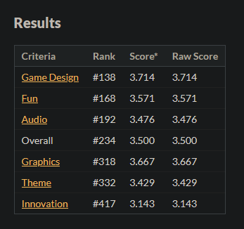

Play Abyss Trail
Abyss trail was my submission to the 7th Brackeys game jam. It placed #234 out of 1606 total entries overall.
I had entered one jam before, but didn't manage to finish in time. With Abyss Trail, I really focused on keeping the scope under control. The game turned out quite simple, but I was happy with it.
The music was composed by MaximusCXI.